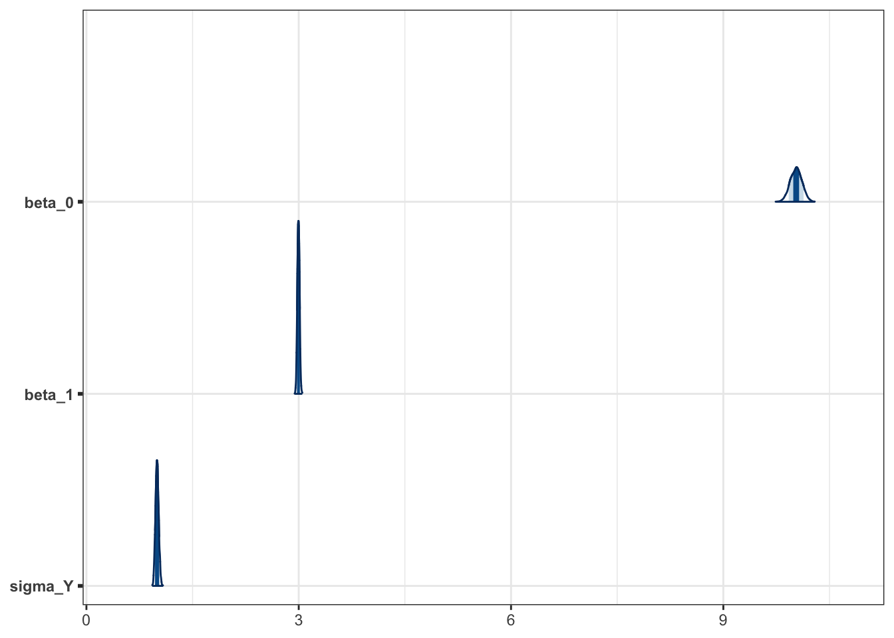
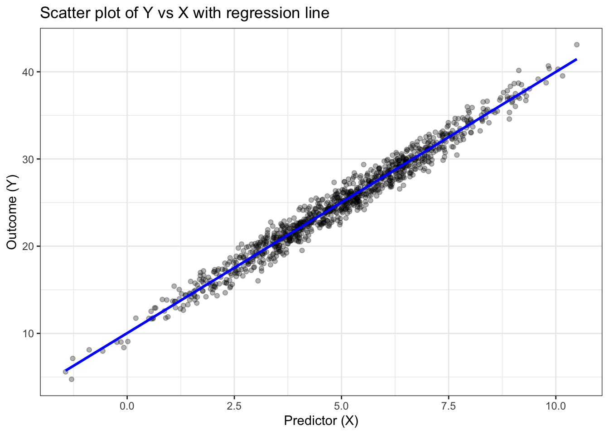

library(tidyverse)
library(easystats)
library(ggformula)
library(simDAG)
library(cmdstanr)
library(posterior)
library(bayesplot)
options(mc.cores = parallel::detectCores())
register_knitr_engine(override = TRUE)
theme_set(theme_bw())
set.seed(666)lm
Scientific/generative model
We are interested in the relationship between a continuous outcome variable \(Y\) and a continuous predictor variable \(X\). We assume that \(Y\) is linearly related to \(X\) with some normally distributed error term.
\[ \begin{align} X & \sim \text{Normal}(\mu_X, \sigma_X) \\ Y & = \beta_0 + \beta_1 X + \epsilon \\ \epsilon & \sim \text{Normal}(0, \sigma_Y) \end{align} \]
Where:
- \(\mu_X\) and \(\sigma_X\) are the mean and standard deviation of the predictor variable \(X\).
- \(\beta_0\) is the intercept of the linear relationship.
- \(\beta_1\) is the slope of the linear relationship.
- \(\sigma_Y\) is the standard deviation of the error term \(\epsilon\).
Scientific and statistical model
Simulate data from the scientific model
mu_X <- 5
sigma_X <- 2
beta_0 <- 10
beta_1 <- 3
sigma_Y <- 1
N <- 1000 # Number of observations
X <- rnorm(N, mean = mu_X, sd = sigma_X)
epsilon <- rnorm(N, mean = 0, sd = sigma_Y)
Y <- beta_0 + beta_1 * X + epsilon
data <- tibble(X = X, Y = Y)Fit linear regression model to simulated data using Stan
data {
int<lower=1> N; // Number of observations
vector[N] X; // Predictor variable
vector[N] Y; // Outcome variable
}
parameters {
real beta_0; // Intercept
real beta_1; // Slope
real<lower=0> sigma_Y; // Standard deviation of the error term
}
model {
// Likelihood
Y ~ normal(beta_0 + beta_1 * X, sigma_Y);
// Priors
beta_0 ~ normal(0, 10); // Prior for intercept
beta_1 ~ normal(0, 10); // Prior for slope
sigma_Y ~ normal(0, 10); // Prior for standard deviation
}# Prepare data for Stan
stan_data <- list(
N = N,
X = X,
Y = Y
)
# Compile & fit the model
lm_fit <- lm_model$sample(stan_data)Running MCMC with 4 chains, at most 24 in parallel...
Chain 1 Iteration: 1 / 2000 [ 0%] (Warmup)
Chain 1 Iteration: 100 / 2000 [ 5%] (Warmup)
Chain 1 Iteration: 200 / 2000 [ 10%] (Warmup)
Chain 1 Iteration: 300 / 2000 [ 15%] (Warmup)
Chain 1 Iteration: 400 / 2000 [ 20%] (Warmup)
Chain 1 Iteration: 500 / 2000 [ 25%] (Warmup)
Chain 1 Iteration: 600 / 2000 [ 30%] (Warmup)
Chain 2 Iteration: 1 / 2000 [ 0%] (Warmup)
Chain 2 Iteration: 100 / 2000 [ 5%] (Warmup)
Chain 2 Iteration: 200 / 2000 [ 10%] (Warmup)
Chain 2 Iteration: 300 / 2000 [ 15%] (Warmup)
Chain 2 Iteration: 400 / 2000 [ 20%] (Warmup)
Chain 2 Iteration: 500 / 2000 [ 25%] (Warmup)
Chain 2 Iteration: 600 / 2000 [ 30%] (Warmup)
Chain 2 Iteration: 700 / 2000 [ 35%] (Warmup)
Chain 2 Iteration: 800 / 2000 [ 40%] (Warmup)
Chain 3 Iteration: 1 / 2000 [ 0%] (Warmup)
Chain 3 Iteration: 100 / 2000 [ 5%] (Warmup)
Chain 3 Iteration: 200 / 2000 [ 10%] (Warmup)
Chain 3 Iteration: 300 / 2000 [ 15%] (Warmup)
Chain 3 Iteration: 400 / 2000 [ 20%] (Warmup)
Chain 3 Iteration: 500 / 2000 [ 25%] (Warmup)
Chain 3 Iteration: 600 / 2000 [ 30%] (Warmup)
Chain 3 Iteration: 700 / 2000 [ 35%] (Warmup)
Chain 3 Iteration: 800 / 2000 [ 40%] (Warmup)
Chain 4 Iteration: 1 / 2000 [ 0%] (Warmup)
Chain 4 Iteration: 100 / 2000 [ 5%] (Warmup)
Chain 4 Iteration: 200 / 2000 [ 10%] (Warmup)
Chain 4 Iteration: 300 / 2000 [ 15%] (Warmup)
Chain 4 Iteration: 400 / 2000 [ 20%] (Warmup)
Chain 4 Iteration: 500 / 2000 [ 25%] (Warmup)
Chain 4 Iteration: 600 / 2000 [ 30%] (Warmup)
Chain 4 Iteration: 700 / 2000 [ 35%] (Warmup)
Chain 4 Iteration: 800 / 2000 [ 40%] (Warmup)
Chain 1 Iteration: 700 / 2000 [ 35%] (Warmup)
Chain 1 Iteration: 800 / 2000 [ 40%] (Warmup)
Chain 1 Iteration: 900 / 2000 [ 45%] (Warmup)
Chain 1 Iteration: 1000 / 2000 [ 50%] (Warmup)
Chain 1 Iteration: 1001 / 2000 [ 50%] (Sampling)
Chain 1 Iteration: 1100 / 2000 [ 55%] (Sampling)
Chain 1 Iteration: 1200 / 2000 [ 60%] (Sampling)
Chain 1 Iteration: 1300 / 2000 [ 65%] (Sampling)
Chain 1 Iteration: 1400 / 2000 [ 70%] (Sampling)
Chain 2 Iteration: 900 / 2000 [ 45%] (Warmup)
Chain 2 Iteration: 1000 / 2000 [ 50%] (Warmup)
Chain 2 Iteration: 1001 / 2000 [ 50%] (Sampling)
Chain 2 Iteration: 1100 / 2000 [ 55%] (Sampling)
Chain 2 Iteration: 1200 / 2000 [ 60%] (Sampling)
Chain 2 Iteration: 1300 / 2000 [ 65%] (Sampling)
Chain 2 Iteration: 1400 / 2000 [ 70%] (Sampling)
Chain 2 Iteration: 1500 / 2000 [ 75%] (Sampling)
Chain 3 Iteration: 900 / 2000 [ 45%] (Warmup)
Chain 3 Iteration: 1000 / 2000 [ 50%] (Warmup)
Chain 3 Iteration: 1001 / 2000 [ 50%] (Sampling)
Chain 3 Iteration: 1100 / 2000 [ 55%] (Sampling)
Chain 3 Iteration: 1200 / 2000 [ 60%] (Sampling)
Chain 3 Iteration: 1300 / 2000 [ 65%] (Sampling)
Chain 3 Iteration: 1400 / 2000 [ 70%] (Sampling)
Chain 3 Iteration: 1500 / 2000 [ 75%] (Sampling)
Chain 4 Iteration: 900 / 2000 [ 45%] (Warmup)
Chain 4 Iteration: 1000 / 2000 [ 50%] (Warmup)
Chain 4 Iteration: 1001 / 2000 [ 50%] (Sampling)
Chain 4 Iteration: 1100 / 2000 [ 55%] (Sampling)
Chain 4 Iteration: 1200 / 2000 [ 60%] (Sampling)
Chain 4 Iteration: 1300 / 2000 [ 65%] (Sampling)
Chain 4 Iteration: 1400 / 2000 [ 70%] (Sampling)
Chain 1 Iteration: 1500 / 2000 [ 75%] (Sampling)
Chain 1 Iteration: 1600 / 2000 [ 80%] (Sampling)
Chain 1 Iteration: 1700 / 2000 [ 85%] (Sampling)
Chain 1 Iteration: 1800 / 2000 [ 90%] (Sampling)
Chain 1 Iteration: 1900 / 2000 [ 95%] (Sampling)
Chain 1 Iteration: 2000 / 2000 [100%] (Sampling)
Chain 2 Iteration: 1600 / 2000 [ 80%] (Sampling)
Chain 2 Iteration: 1700 / 2000 [ 85%] (Sampling)
Chain 2 Iteration: 1800 / 2000 [ 90%] (Sampling)
Chain 2 Iteration: 1900 / 2000 [ 95%] (Sampling)
Chain 2 Iteration: 2000 / 2000 [100%] (Sampling)
Chain 3 Iteration: 1600 / 2000 [ 80%] (Sampling)
Chain 3 Iteration: 1700 / 2000 [ 85%] (Sampling)
Chain 3 Iteration: 1800 / 2000 [ 90%] (Sampling)
Chain 3 Iteration: 1900 / 2000 [ 95%] (Sampling)
Chain 3 Iteration: 2000 / 2000 [100%] (Sampling)
Chain 4 Iteration: 1500 / 2000 [ 75%] (Sampling)
Chain 4 Iteration: 1600 / 2000 [ 80%] (Sampling)
Chain 4 Iteration: 1700 / 2000 [ 85%] (Sampling)
Chain 4 Iteration: 1800 / 2000 [ 90%] (Sampling)
Chain 4 Iteration: 1900 / 2000 [ 95%] (Sampling)
Chain 4 Iteration: 2000 / 2000 [100%] (Sampling)
Chain 1 finished in 0.4 seconds.
Chain 2 finished in 0.3 seconds.
Chain 3 finished in 0.3 seconds.
Chain 4 finished in 0.3 seconds.
All 4 chains finished successfully.
Mean chain execution time: 0.3 seconds.
Total execution time: 0.4 seconds.# Print results
lm_fit$summary()# A tibble: 4 × 10
variable mean median sd mad q5 q95 rhat ess_bulk
<chr> <dbl> <dbl> <dbl> <dbl> <dbl> <dbl> <dbl> <dbl>
1 lp__ -498. -498. 1.17 0.971 -501. -497. 1.00 1636.
2 beta_0 10.0 10.0 0.0822 0.0834 9.89 10.2 1.00 1493.
3 beta_1 3.00 3.00 0.0156 0.0158 2.97 3.02 1.00 1483.
4 sigma_Y 0.999 0.998 0.0226 0.0223 0.963 1.04 1.01 1944.
ess_tail
<dbl>
1 2522.
2 1628.
3 1616.
4 1911.Visualize results
# Extract posterior samples
posterior_samples <- lm_fit$draws()
posterior_df <- as_draws_df(posterior_samples)
# Plot posterior distributions of parameters
mcmc_areas(
posterior_samples,
pars = c("beta_0", "beta_1", "sigma_Y"),
prob = 0.8
)
# Scatter plot of data with regression line
gf_point(Y ~ X, data = data, alpha = 0.3) %>%
gf_lm(Y ~ X, data = data, color = "blue", size = 1.5) +
labs(title = "Scatter plot of Y vs X with regression line",
x = "Predictor (X)",
y = "Outcome (Y)")